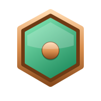
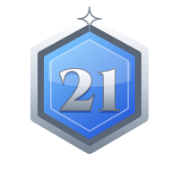
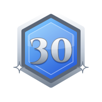
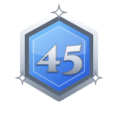
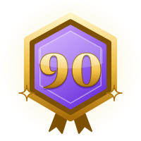
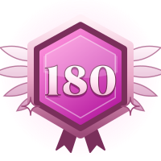

Nuqta for Windows
One thing.
Full focus.
Nuqta is a calm desktop app for doing one thing at a time. It waits in your tray, lives in a small notch at the top of your screen, and is one shortcut away from any app.
One payment. No subscription, no account, no notifications.

- 1Press Ctrl Shift Space from any app
- 2Type the task - ~15m adds a timebox
- 3↵ adds it to today
- 4Esc - back to work
The notch
Always there.
Never in the way.
A small dark notch sits flush with the top edge of your screen. It shows the one task you are on and how long you have been at it. It never takes the keyboard, never pops up, and clicks pass straight through it to the app below.
In focus
The task, the time in this session, and a thin line that fills as the session runs.
Hover to act
Point at it and it opens into one smooth island: pause, mark done, or hide it. When the task has steps, the next one shows under its title.
Paused for you
Lock the PC, let it sleep, or step away for five minutes, and the session pauses by itself.
Over the timebox
Gave it 45 minutes? Past that, the time turns amber. No sound, no popup.
Between tasks
With nothing in focus it shows what is next today, or asks "What's the one thing?"
A quiet end to the day
After 18:00, once you have focused, it says "Day done" with your total. A click opens today in the Task hub for a short look back. It only changes its text; it never opens a window on its own.
The Command bar
One shortcut.
From any app.
Press Ctrl Shift Space. The bar appears in about 25 milliseconds, already showing today in time order. Type a task, press Enter, and it is planned for today. Press Enter on a row to start it.
- Timebox as you type. End with ~45m and the task gets a 45-minute timebox.
- Repeats in plain words. End with "every mon wed fri", "weekdays" or "every 3 days".
- Tab sends it to the Inbox instead of today, for things without a day yet.
- Keys you typed are never lost. Start typing the moment you press the shortcut; Nuqta replays every key into the bar, in order.
The one rule
One task in focus.
Really one.
Only one task can be in focus at a time - the database itself refuses a second. Starting something else first asks a simple question about the task you are leaving, so nothing is ever left half-open.
- Done marks it finished. Not finished yet puts it back on your list. No longer needed drops it.
- Dropped tasks are never hidden. They stay on the calendar, dashed or struck through, as an honest record.
- Answer with one key: D L X, or Esc to keep working.
The Task hub
Plan the week.
Live the day.
An Inbox for everything without a day, and a calendar by day, week or month. Drag a task onto a time and it snaps to 15 minutes. Every focus session you finish stays on the calendar as quiet proof of the work.
The whole month, at a glance.
Every day shows its focus time and its tasks as small chips: done, dropped, planned, in focus, calendar events, and the coming days of repeating tasks.
Each task, with room to think.
Click a task and its panel opens beside the pointer: its day, time and timebox, the sessions you spent on it, small steps, and notes with clickable links.
Repeats, the calm way.
Daily, weekdays, chosen days, a day of the month, or every few days. Only the current one exists as a task; the next appears when you finish or skip it.
Overdue never disappears.
A task left on a past day stays in your Inbox under Overdue and in the Command bar, with its day in amber, until you do it, move it or drop it.
A Timeline for everything open.
One searchable list of all your tasks, grouped by date or by status, with quick actions on every row. Press L in the hub.
The focus score
Measured for you.
Nothing to fill in.
Every session of five minutes or more gets a score from 1 to 5 when it ends. No forms, no ratings, no AI - just four plain rules you can check yourself.
The focus map
Find your
sharpest hours.
Your scores, laid out by weekday and hour over the last eight weeks. After 14 days with sessions, Nuqta names your best two-hour window, so you can save hard work for it.
- Hours from 07:00 to 22:00, Monday to Sunday.
- Each square is the average score of the sessions that started in it.
- Too little data? It says so, and how many more days it needs.
Breaks
Rest that
actually rests.
When a session ends - 50 minutes by default - a quiet window asks you to look away and breathe with a slow circle. The next session never starts by itself. You decide when.
- Sessions from 15 to 120 minutes, breaks from 3 to 30.
- Enter starts the next session, + adds five minutes.
- An optional one-key mood check-in. It is only for you and never changes your score.
Streak and medals
Small days
add up.
One real focus session a day keeps your streak going. It never nags, never warns you about losing it, and forgives the days you rest.















20 medals, from bronze to royal gold. Each one turns in 3D when you open it.
Optional, and yours
Your calendar in.
Your data with you.
Both are off until you turn them on, and both talk only to Google.
- Google Calendar, read-only. Your events appear in green next to your tasks, so you plan around real meetings. Nuqta can never change your calendar. Any event can become a task with one click.
- Sync through your own Google Drive. Your Nuqta data goes into a hidden app folder in your Drive that only Nuqta can see. Nuqta has no server of its own, so there is no Nuqta copy of your data anywhere else.
- Several PCs, one list. Each PC can even have its own task in focus at the same time.
Privacy, in detail
What leaves your computer.
Your tasks, sessions, notes and streak live in a local database on your PC. These are the only cases in which anything goes online.
| What | When | To |
|---|---|---|
| Your license key and PC name | Once when you activate, then a quiet check about once a month while you are online. Being offline never locks the app. | Polar, the store that sells Nuqta |
| A copy of your Nuqta data | Only if you turn on sync. | A hidden app folder in your own Google Drive |
| A read of your calendar | Only if you connect Google Calendar: every 15 minutes, read-only, from a week ago to six weeks ahead. | Google Calendar |
| Analytics, crash reports, ads | Never. | - |
Full details in the privacy policy.
Light by design
Small. Fast.
Quiet.
Nuqta is built with Rust and the web view that comes with Windows. You will not notice it is running - until you need it.
Median values measured with release builds on the developer's Windows 11 PC, November 2026. Yours will differ a little.
Keyboard first
Everything, without the mouse.
Every action in Nuqta has a key. These are the ones you will use every day.
Anywhere
Command bar
Task hub
Honest about it
What Nuqta doesn't do.
A focus app should know what to leave out. If something adds noise, it isn't here.
Pricing
One price. Yours to keep.
- Every feature, nothing locked
- Activate it on up to 3 of your PCs
- No subscription, no account, no ads
- Your data stays on your computer
Secure checkout by Polar. The installer and your license key arrive by email.
Questions.
What does "Nuqta" mean?
"Dot" - or "point" - in Uzbek. The app's icon is a ring of quiet dots around one bright dot: the one task in focus.
Which computers does Nuqta run on?
Windows 11, 64-bit. Windows 10 should work too, but it has not been tested yet, so it is not promised.
Is there a Mac version?
Not yet. A Mac version is planned, without a date. The changelog shows what is next.
Is it a subscription?
No. You pay $4.99 once and keep it.
How does the license key work?
After you buy, Polar emails you the installer and a license key. Nuqta asks for the key the first time it starts. One key works on up to 3 PCs; to move it, choose Settings → License → Deactivate this PC on the old one.
Does it work offline?
Yes. It needs the internet once, to activate your key. After that it checks the key about once a month when you happen to be online - being offline never locks it.
Do I need an account?
No. There is no Nuqta account. Google Drive sync and Google Calendar are optional and use your own Google account only if you connect them.
Will it send me notifications?
Never. The only window that appears by itself is the Break window, when a focus session you started ends.
Does it use AI?
No. The focus score follows four plain rules, and the focus map is an average of your scores. Nothing you write is sent anywhere to be analysed.
Can I import tasks from another app?
No, there is no import. You can connect Google Calendar and turn any event into a task with one click.
Will Windows warn me when I install it?
It may. Until the installer is code-signed, Windows SmartScreen can show "Windows protected your PC" for a new app. Choose "More info", then "Run anyway". The installer installs for your account only and never asks for admin rights.
Where is my data stored?
In a local database in your Windows user folder. With sync on, a copy also goes to a hidden app folder in your own Google Drive. Privacy policy